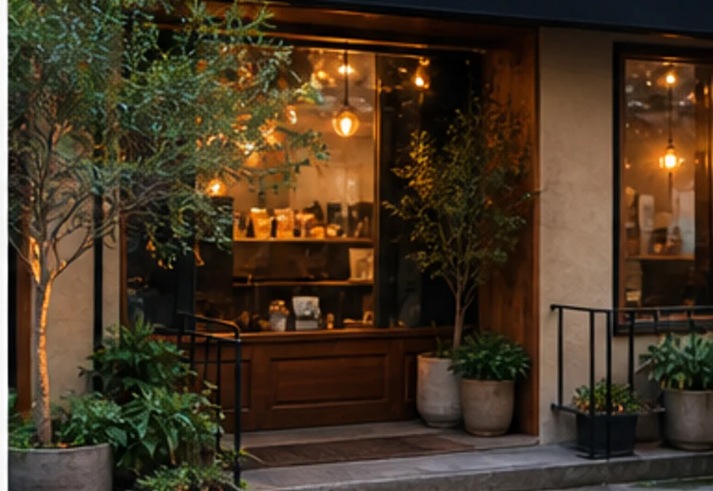
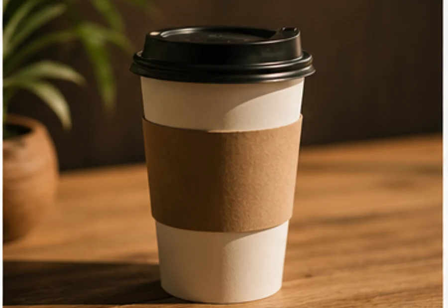
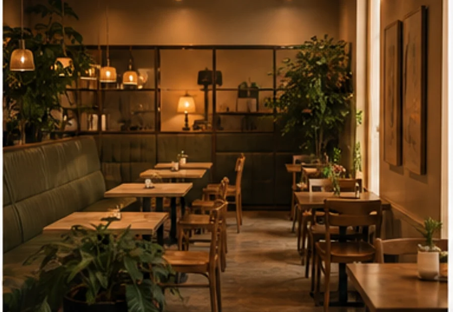
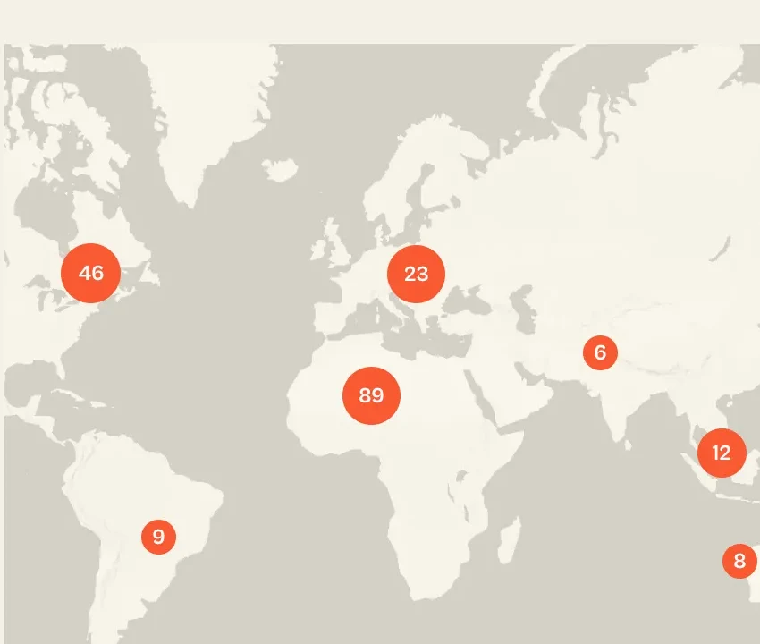
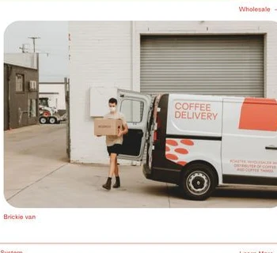
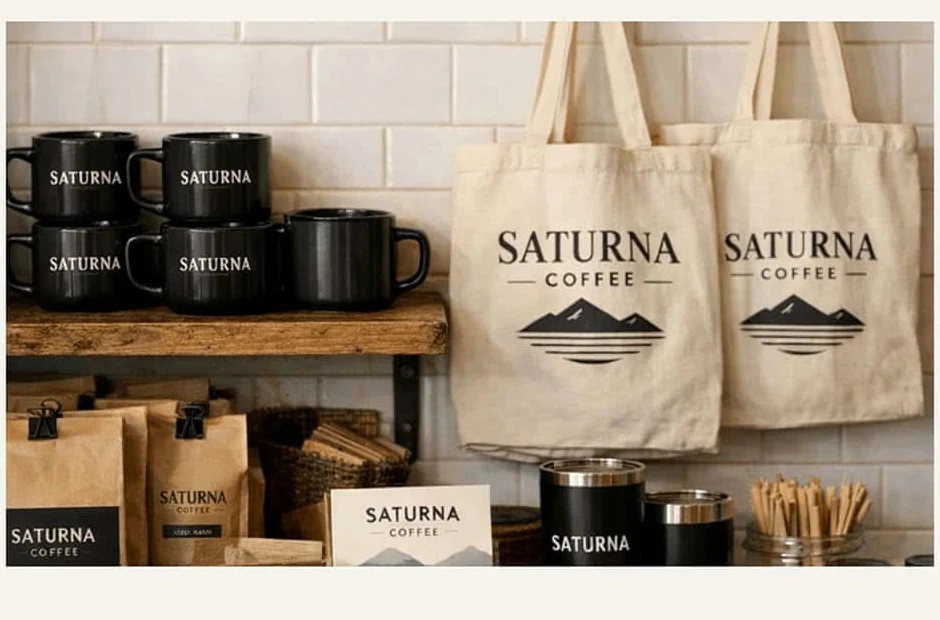

$8Iced Vanilla
Cafezi roasts with patience, brews with purpose, and serves every cup with a generous heart.

Quiet mornings, thoughtful roasting, and a room designed to make every cup feel personal.

From one neighborhood counter to a community of regulars, Cafezi has always grown one conversation at a time.
Read more
Simple ingredients and precise preparation, presented with calm editorial space.


Every cup is a quiet invitation to slow down and feel at home.
Every cup is a quiet invitation to slow down and feel at home.
Here is a look at the cozy spaces and familiar rituals we see every day.

From morning brews to late afternoon bites, the room shifts while the welcome stays the same.
Rich espresso, silky milk, and patient extraction.

160 ml
$5.50160 ml
$6.50
160 ml
$6.80240 ml
$6.20Four profiles, each built to reveal a different side of the bean.


Small details, warm service, and coffee worth returning for.
Jane Smith"The room feels considered without trying too hard. The latte was balanced and beautiful."
5.0 rating
Adam Simons"A quiet place for a meeting, and easily the best cold brew in the neighborhood."
5.0 rating
Lina Brooks"Thoughtful service, crisp pastries, and a room that makes an unhurried morning feel easy."
5.0 rating
There is always room for coffee. Come for the brew, stay for the calm.
Order nowThoughtful coffee, clear sourcing, and a space built for everyday comfort.
Fresh small batches each week.
Read moreRelationships built at origin.
Our valuesMade carefully, served simply.
Visit usFrom careful harvest to low-and-slow roasting, each step protects sweetness and clarity.
See our processJava Arabica brings cocoa sweetness, citrus lift, and a clean finish.

Brazil, Rwanda, and Colombia. Roasted for espresso and milk.
Available in more than twenty cities through trusted cafe partners.

28 Brookline Street, New York
Open today until 8 PM
Our home collection makes a consistently rich cup simple, without losing the craft behind it.
Shop coffeeOur home collection makes a consistently rich cup simple, without losing the craft behind it.
Shop coffee
Cafezi supplies offices, hotels, and restaurants with reliable delivery and custom roast plans.
Talk wholesale
Cafezi supplies offices, hotels, and restaurants with reliable delivery and custom roast plans.
Talk wholesaleCafezi is Latin for soil. Our relationships begin with the people who understand the land best.
$24.50
$24.00
$22.00
We partner directly with farms and cooperatives, paying premiums for quality and supporting resilient communities.
We partner directly with farms and cooperatives, paying premiums for quality and supporting resilient communities.
The coffees our regulars return to most.
BecomeShopOur pick of the month, selected for espresso and filter brewing.
Our pick of the month, selected for espresso and filter brewing.
Our menu moves with the seasons, our room stays warm, and every visit begins with the same generous welcome.
Read more

Albert brings classical pastry technique to Cafezi, balancing texture, restraint, and seasonal fruit.
David leads our savory kitchen with a focus on generous brunch dishes and clean, precise flavor.

Coffee done properly. Food that holds its own. A seat, a reset, and a reason to stay a little longer.
Seasonal drinks on rotation. Here is what we are pouring now.
View the menu
Mugs, bags, and gift cards designed for slow mornings beyond the cafe.
Shop merchTry our signature affogato and make your daily ritual a little sweeter.
Earn points on every purchase and unlock seasonal specials.
Join rewardsHand-selected beans, careful brewing, and a menu that feels familiar.
We opened Cafezi for people who value good coffee but stay for atmosphere.
Visit Cafezi01 / Pairings02 / Cold barBuilt for the early cup, the long lunch, and the quiet hour between plans.
Our storyChoose a favorite, take a familiar seat, and let the day move at its own pace.
Find your cup“Cafezi gives every cup the care of a special occasion, without losing the ease of a neighborhood room.”
“The kind of place where the music, the service, and the espresso all feel perfectly tuned.”
“A generous menu, genuinely warm people, and a room that always makes space for one more.”
Six origins, six distinct expressions in the cup.
Dense and focused
Soft touch of milk
Silky and balanced
Long and comforting
Clean and refreshing
Roasted in small batches and brewed with precision.
The familiar pause that sets the day in motion.
Good coffee makes conversation come easily.
Made for regulars, newcomers, and everyone between.
A brighter bar, a bigger shared table, and the same small-batch coffee you know.
Cafezi, with care.
Find the new roomTell us what flavors you reach for and we will recommend a coffee, grind, and method.
Served with products from people we trust.
“It gives me great pleasure to contribute to the community with the best coffee in town—and a place to build relationships.”
Two carefully roasted coffees for two generous ways of beginning the day.
$24Freshly roasted coffees selected for sweetness, structure, and a generous finish.
Shop coffeeChocolate · almond
$16Jasmine · citrus
$18Caramel · stone fruit
$17Cocoa · molasses
$15Long, smooth, quietly sweet.
Chocolate, espresso, soft milk.
Espresso marked with milk.
Distinct lots, transparent origins, and a roast profile designed to make brewing at home feel effortless.
Shop coffeeStart with the flavors you enjoy; our team will match an origin and roast.
Yes. Small batches are roasted throughout the week for freshness.
Yes. Use the reservation form above and we will confirm by email.
Oat and almond milk are available for every espresso drink.
We serve a carefully selected sugarcane-process decaf.
Choose whole bean or ask us to grind for your preferred brewer.
Our pastry counter is replenished every morning and afternoon.
Our shared room can be reserved for selected evening gatherings.
CAFEZI
Traceable lots, careful roasting, and a cup that reveals where it began.
Get a coffeeCOFFEE & GO
Roaster, wholesaler, and distributor of coffee and coffee things.
Chocolate, hazelnut, round sweetness.
Caramel, plum, balanced acidity.
Cocoa, spice, heavy body.
Choose an origin to learn more.
Better sourcing, patient roasting, warm service, and coffee crafted to become a daily ritual.
Make Cafezi part of your day